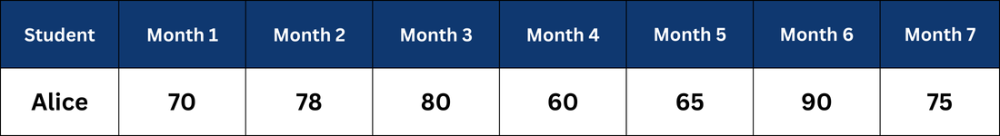
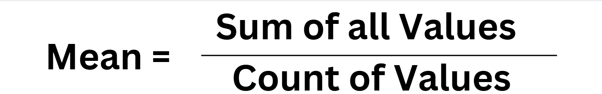
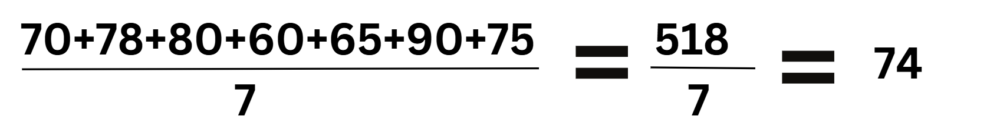
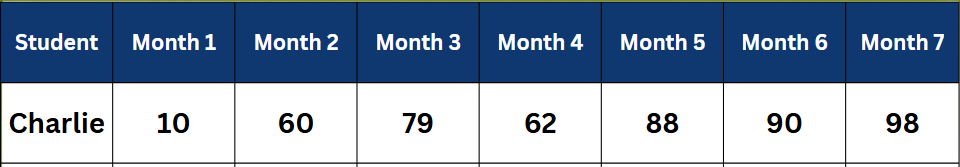
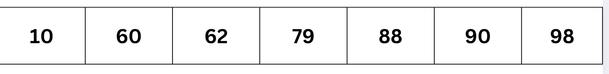
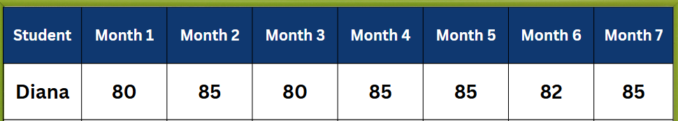

Let's Look at the score of Alice:
We can see that her scores range between 60 to 90, however she has different scores in most of the months. So in cases where the numbers are clearly within a range, there are no extreme values (outliers), we find Average of the data by using a method called Mean

So the Average for Alice is

Though 74 is not one of the scores scored by Alice but it gives us the middle value of his scores.
Now let’s look at Charlie’s scores:

If you see Charlie's scores, in Month1 he had an extremely low score and in month 7 he had scored very high. In such cases we use another way to analyze the data which is called Median.
📈 Median:
The median is the middle number in a dataset when the numbers are arranged in order.
Arranging Charlie’s score in ascending order we get:

Here the middle number is 79, hence the median is 79.
Now let's look Diana’s scores:

If you look at this data, Diana's scores range between 80 to 85, however most of the time she was scoring 85. Hence we do not need to find Mean or Median. Here we can use a method called Mode.
🎯 Mode:
The mode is the number that appears most frequently in a dataset.
Hence, in this data Mode is 85.
Mode is also very useful when data is non-numeric (categorical) or when you are interested in the most frequently occurring data point. It is especially helpful in analyzing consumer preferences or behaviors.
📌 Example (Unimodal):
- 📊 Data: Favorite fruits: Apple, Banana, Apple, Orange, Banana, Apple.
- 🎉 Mode: Apple
- 🍎 Result: Apple is the most preferred fruit.
📌 Example with Multiple Modes (Bimodal or Multimodal):
- 📊 Data: Favorite colors: Red, Blue, Red, Green, Blue.
- 🎉 Mode: Red and Blue
- 🌈 Result: Both Red and Blue appear most frequently, indicating a tie in preferences.
📚 Examples:
🔍 Example 1: School Performance Analysis
Situation: A school principal wants to analyze the overall performance of students in a standardized test. Scores range from 0 to 100, but a few students scored exceptionally high due to a special preparation program.
Decision: Use the median to determine the typical student score because the high scores of the few might distort the mean, making it less representative of the general student body.
Calculation:
- 📊 Scores: 55, 60, 65, 70, 95, 98, 100
- 🔢 Ordered Scores: 55, 60, 65, 70, 95, 98, 100
- 🎯 Median Score: 70
✅ The median is 70, indicating that half of the students scored below 70 and the other half scored above, offering a balanced view of overall student performance.
🔍 Example 2: Customer Satisfaction Survey
Situation: A company conducts a customer satisfaction survey where customers rate their satisfaction on a scale of 1 to 5. The results are mostly 3s and 4s, but there are a significant number of 1s and 5s as well.
Decision: Use the mode to identify the most common customer satisfaction level. This helps in understanding the most frequent customer experience.
Calculation:
- 📊 Ratings: 3, 4, 3, 1, 5, 3, 4, 3, 5, 5
- 🎯 Mode: 3
✅ The mode is 3, indicating that the most common rating given by customers is 3, suggesting moderate satisfaction across the customer base.
🔍 Example 3: Annual Household Income Data
Situation: An economist analyzes annual household incomes in a region where the data is distorted by a few high-income households.
Decision: Use the median to avoid the skewing effect of high incomes and get a better sense of what a typical household earns.
Calculation:
- 📊 Incomes (in thousands): 30, 40, 45, 50, 250 (outlier), 60, 70
- 🔢 Ordered Incomes: 30, 40, 45, 50, 60, 70, 250
- 🎯 Median Income: 50 thousand
✅ The median income is $50,000, offering a more accurate reflection of the central tendency of the income distribution without the influence of extreme values.